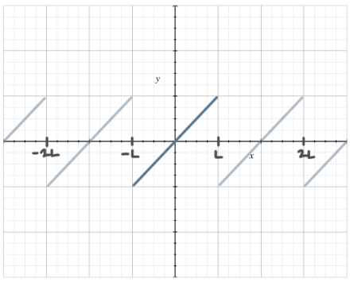

Differential Equations Pt. 5
Fourier Series Representations
We are familiar with representing a function (and therefore the curve of a general solution) as a series. Taylor series have limited usefulness in that the function has to be sufficiently differentiable, and we can run into the issue that the radius of convergence is too small to make the series useful.
Fourier Series
A Fourier series uses sine and cosine functions of different arguments.
$f(x) = \sum_{n=0}^{\infty} A_n ~cos \left( \frac{n \pi x}{L} \right) + \sum B_n ~sin \left( \frac{n \pi x}{L} \right)$
The $n=0$ term in the first series gives $A_0 ~cos(0) = A_0$, so we could also choose to write this as:
$f(x) = A_0 + \sum_{n=1}^{\infty} A_n ~cos \left( \frac{n \pi x}{L} \right) + \sum_{n=1}^{\infty} B_n ~sin \left( \frac{n \pi x}{L} \right)$
This gives us a Fourier series representation of the function $f(x)$ on the interval $-L \le x \le L$. We are adding a bunch of cosine functions with different arguments in the first series, and sine waves in the second. In theory, we can express any function as no more than the sum of sine and cosine functions, though for straight lines, an infinite number of sine and cosine functions may be required.
The coefficients $A_n$ and $B_n$ have their own values, which we can calculate using:
$A_0 = \frac{1}{2L} \int_{-L}^L f(x) ~dx$
$A_n = \frac{1}{L} \int_{-L}^L f(x) ~cos \left( \frac{n \pi x}{L} \right) ~dx, \text{ with } n = 1, 2, 3, \ldots$
$B_n = \frac{1}{L} \int_{-L}^L f(x) ~sin \left( \frac{n \pi x}{L} \right) ~dx, \text{ with } n = 1, 2, 3, \ldots$
Once we find these values for $A_n$ and $B_n$, we'll plug them into our Fourier series formula, then simplify as much as we can to get the Fourier series representation of our function.
It will often be the case that we'll find expressions for $A_n$ and $B_n$ that include $sin(n \pi)$ and $cos(n \pi)$. Recall that for integer values of $n$, $sin(n \pi) = 0$ and $cos(n \pi) = (-1)^n$. We will also often use the even-odd trigonometric identities.
$sin(-x) = -sin ~x$
$cos(-x) = cos ~x$
Example:
Find the Fourier series representation of $f(x) = x$ on $-L \le x \le L$.
First, we'll find $A_0$ and the coefficients $A_n$ and $B_n$.
$A_0 = \frac{1}{2L} \int_{-L}^L f(x) ~dx$
$A_0 = \frac{1}{2L} \int_{-L}^L x ~dx$
$A_0 = \frac{1}{2L} \left( \frac{1}{2}x^2 \right) \bigg|_{-L}^L$
$A_0 = \frac{1}{2L} \left( \frac{1}{2}L^2 - \frac{1}{2}(-L)^2 \right)$
$A_0 = \frac{1}{2L}(0) = 0$
For $A_n$, we get:
$A_n = \frac{1}{L} \int_{-L}^L f(x) ~cos \left( \frac{n \pi x}{L} \right) ~dx$
$A_n = \frac{1}{L} \int_{-L}^L x ~cos \left( \frac{n \pi x}{L} \right) ~dx$
Use integration by parts with $u=x$, $du=dx$, and:
$dv = cos \left( \frac{n \pi x}{L} \right)$
$v = \left( \frac{L}{n \pi} \right) ~sin \left( \frac{n \pi x}{L} \right) ~dx$
$A_n = \frac{1}{L} \left[ x \left( \frac{L}{n \pi} \right) sin \left( \frac{n \pi x}{L} \right) - \int \left( \frac{L}{n \pi} \right) ~sin \left( \frac{n \pi x}{L} \right) ~dx \right] \bigg|_{-L}^L$
$A_n = \frac{1}{L} \left[ \left( \frac{Lx}{n \pi} \right) ~sin \left( \frac{n \pi x}{L} \right) + \left( \frac{L}{n \pi} \right)^2 ~cos \left( \frac{n \pi x}{L} \right) \right] \bigg|_{-L}^L$
$A_n = \frac{1}{L} \left[ \left( \frac{L^2}{n \pi} \right) ~sin(n \pi) + \left( \frac{L}{n \pi} \right) ~cos(n \pi) + \left( \frac{L^2}{n \pi} \right) ~sin(-n \pi) - \left( \frac{L}{n \pi} \right)^2 ~cos (n \pi) \right]$
Using the even-odd identities, we can rewrite this as:
$A_n = \frac{1}{L} \left[ \left( \frac{L^2}{n \pi} \right) ~sin(n \pi) + \left( \frac{L}{n \pi} \right)^2 ~cos(n \pi) - \left( \frac{L^2}{n \pi} \right) ~sin(n \pi) - \left( \frac{L}{n \pi} \right)^2 ~cos(n \pi) \right]$
$A_n = \frac{1}{L}(0)$
$A_n = 0$
And for $B_n$, we get:
$B_n = \frac{1}{L} \int_{-L}^L f(x) ~sin \left( \frac{n \pi x}{L} \right) ~dx$
$B_n = \frac{1}{L} \int_{-L}^L x ~sin \left( \frac{n \pi x}{L} \right) ~dx$
Use integration by parts with $u=x$, $du=dx$, and:
$dv = sin \left( \frac{n \pi x}{L} \right) ~dx$
$v = - \left( \frac{L}{n \pi} \right) ~cos \left( \frac{n \pi x}{L} \right)$
$B_n = \frac{1}{L} \left[ - \left( \frac{Lx}{n \pi} \right) ~cos \left( \frac{n \pi x}{L} \right) - \int \left( \frac{L}{n \pi} \right) ~cos \left( \frac{n \pi x}{L} \right) ~dx \right]$
$B_n = \frac{1}{L} \left[ - \left( \frac{Lx}{n \pi} \right) ~cos \left( \frac{n \pi x}{L} \right) + \left( \frac{L}{n \pi} \right)^2 ~sin \left( \frac{n \pi x}{L} \right) \right] \bigg|_{-L}^L$
$B_n = \frac{1}{L} \left[ - \left( \frac{L^2}{n \pi} \right) ~cos(n \pi) + \left( \frac{L}{n \pi} \right)^2 ~sin(n \pi) - \left( \frac{L^2}{n \pi} \right) ~cos(n \pi) - \left( \frac{L}{n \pi} \right)^2 ~sin(-n \pi) \right]$
Using the even-odd identities, we can rewrite this as:
$B_n = \frac{1}{L} \left[ - \left( \frac{L^2}{n \pi} \right) ~cos(n \pi) + \left( \frac{L}{n \pi} \right)^2 ~sin(n \pi) - \left( \frac{L^2}{n \pi} \right) + \left( \frac{L}{n \pi} \right)^2 ~sin(n \pi) \right]$
$B_n = \frac{1}{L} \left[ 2 \left( \frac{L}{n \pi} \right)^2 ~sin(n \pi) - 2 \left( \frac{L^2}{n \pi} \right) ~cos(n \pi) \right]$
For $n = 1, 2, 3, \ldots$, $sin(n \pi) = 0$, and $cos(n \pi) = (-1)^n$, so the expression for $B_n$ simplifies to:
$B_n = - \frac{2L}{n \pi} ~cos(n \pi)$
$B_n = - \frac{2L(-1)^n}{n \pi}$
$B_n = \frac{ (-1)^{n+1} 2L }{ n \pi }, \text{ with } n = 1, 2, 3, \ldots$
The Fourier series for $f(x) = x$ on $-L \ge x \ge L$ is:
$f(x) = A_0 + \sum_{n=1}^{\infty} A_n ~cos \left(\frac{n \pi x}{L} \right)$
$f(x) = 0 + \sum_{n=1}^{\infty} (0) ~cos \left(\frac{n \pi x}{L} \right) + \sum_{n=1}^{\infty} \frac{ (-1)^{n+1} 2L }{ n \pi } ~sin \left(\frac{n \pi x}{L} \right)$
$f(x) = \sum_{n=1}^{\infty} \frac{ (-1)^{n+1} 2L }{ n \pi } ~sin \left(\frac{n \pi x}{L} \right)$
Even/Odd Rules for Coefficients
Recall from calculus that the integral of an odd function over a symmetric interval is $0$, while the interval of an odd function over a symmetric interval is equivalent to $2$ times the same integral over half of the interval.
$\int_{-L}^L f(x) ~dx = 0$, when f(x) is odd ($f(-x) = -f(x)$)
$\int_{-L}^L f(x) ~dx = 2 \int_0^L f(x) ~dx$, when f(x) is even ($f(-x) = f(x)$)$
So when it comes to the integral formulas that we use to calculate $A_0$, $A_n$, and $B_n$,
$A_0 = \frac{1}{2L} \int_{-L}^L f(x) ~dx$
$A_n = \frac{1}{L} \int_{-L}^L f(x) ~cos \left(\frac{n \pi x}{L} \right) ~dx, \text{ with } n = 1, 2, 3, \ldots$
$B_n = \frac{1}{L} \int_{-L}^L f(x) ~sin \left(\frac{n \pi x}{L} \right) ~dx, \text{ with } n = 1, 2, 3, \ldots$
because each of them is integrating over the symmetric interval $-L \le 0 \le L$, we can say that:
$A_0 = 0$, if $f(x)$ is odd, $n = 1, 2, 3, \ldots$
$A_0 = \frac{1}{L} \int_0^L f(x) ~dx$, if $f(x)$ is even, $n = 1, 2, 3, \ldots$
Because the cosine function in the $A_n$ formula is an even function, the product $f(x) \cdot cos \left(\frac{n \pi x}{L} \right)$ will be even when $f(x)$ is even, and odd when $f(x)$ is odd.
$A_n = 0$, if $f(x)$ is odd, $n = 1, 2, 3, \ldots$
$A_n = \frac{2}{L} \int_0^L f(x) ~cos \left(\frac{n \pi x}{L} \right) ~dx$, if $f(x)$ is even, $n = 1, 2, 3, \ldots$
And because the sine function in the $B_n$ formula is an odd function, the product $f(x) \cdot sin \left(\frac{n \pi x}{L} \right)$ will be even when $f(x)$ is odd (and $0$ if $f(x)$ is even).
$B_n = \frac{2}{L} \int_0^L f(x) ~sin \left(\frac{n \pi x}{L} \right) ~dx$, if $f(x)$ is odd, $n = 1, 2, 3, \ldots$
Looking back, when we calculated $A_0$ we found:
$A_0 = \frac{1}{2L} \int_{-L}^L x ~dx$
which is the integral of an odd function ($f(x) = x$ is odd) over a symmetric interval. We could have known right away that $A_0 = 0$.
Similarly, in calculating $A_n$, we found that:
$A_n = \frac{1}{L} \int_{-L}^L x ~cos \left(\frac{n \pi x}{L} \right) ~dx$
which is the integral of and odd function. $f(x) = x$ is odd, the cosine function is even, and the product of an even and odd function is itself an odd function, over a symmetric interval. So we could have known that $A_n = 0$.
Most functions are neither even nor odd.
Periodic Functions and Periodic Extensions
Periodic functions repeat the same values at regular, predictable intervals. The reason we were able to find the Fourier series of $f(x) = x$ is because we defined the interval $-L \le x \le L$. Instead of representing $f(x) = x$ with a Fourier series, we represented the periodic extension of $f(x) = x$, which is the function we find by repeating the part of $f(x) = x$ on the interval $-L \le x \le L$. We have turned the non-periodic $f(x) = x$ into its periodic extension.

Representing Piecewise Functions
We can use a Fourier series to represent a piecewise function, and doing so will be important. Any function defined in two or more pieces is a piecewise function.
Example:
Find the Fourier series of the following piecewise function on $-L \le x\le L$.
$f(x) = \begin{cases} 1, \text{ for } -L \le x \le 0 \\ x, \text{ for } 0 \le x \le L \end{cases} $
For $A_0$, we get:
$A_0 = \frac{1}{2L} \int_{-L}^L f(x) ~dx$
$A_0 = \frac{1}{2L} \int_{-L}^0 1 ~dx + \frac{1}{2L} \int_0^L x ~dx$
$A_0 = \frac{x}{2L} \bigg|_{-L}^0 + \frac{x^2}{4L} \bigg|_0^L$
$A_0 = \frac{0}{2L} - \frac{-L}{2L} + \frac{L^2}{4L} - \frac{0}{4L}$
$A_0 = \frac{1}{2} + \frac{L}{4}$
$A_0 = \frac{l+2}{4}$
For $A_n$, we get:
$A_n = \frac{1}{L} \int_{-L}^L f(x) ~cos \left(\frac{n \pi x}{L} \right) ~dx$
$A_n = \frac{1}{L} \int_{-L}^0 ~cos \left(\frac{n \pi x}{L} \right) ~dx + \frac{1}{L} \int_0^L x ~cos \left(\frac{n \pi x}{L} \right) ~dx$
$A_n = \frac{1}{L} \left( \frac{L}{n \pi} \right) ~sin \left(\frac{n \pi x}{L} \right) \bigg|_{-L}^0 + \frac{1}{L} \int_0^L x ~cos \left(\frac{n \pi x}{L} \right) ~dx$
$A_n = \left( \frac{1}{n \pi} \right) ~sin \left(\frac{n \pi 0}{L}) \right) - \left( \frac{1}{n \pi} \right) ~sin \left(\frac{n \pi -L}{L}) \right) + \frac{1}{L} \int_0^L x ~cos \left(\frac{n \pi x}{L} \right) ~dx$
$A_n = - \left( \frac{1}{n \pi} \right) ~sin(-n \pi) + \frac{1}{L} \int_0^L x ~cos \left(\frac{n \pi x}{L} \right) ~dx$
Since $sin(-x) = - sin(x)$, we get:
$A_n = \left( \frac{1}{n \pi} \right) ~sin(n \pi) + \frac{1}{L} \int_0^L x ~cos \left(\frac{n \pi x}{L} \right) ~dx$
$A_0 = \frac{1}{L} \int_0^L x ~cos \left(\frac{n \pi x}{L} \right) ~dx$
Use integration by parts with $u=x$, $du=dx$, and:
$dv = cos \left(\frac{n \pi x}{L} \right) ~dx$
$v = \left( \frac{L}{nx} \right) ~sin \left(\frac{n \pi x}{L} \right)$
$A_n = \frac{1}{L} \left[ x \left( \frac{L}{n \pi} \right) ~sin \left( \frac{n \pi x}{L} \right) - \int \left( \frac{L}{n \pi} \right) ~sin \left( \frac{n \pi x}{L} \right) ~dx \right] \bigg|_0^L$
$A_n = \frac{1}{L} \left[ \left( \frac{Lx}{n /pi} \right) ~sin \left(\frac{n \pi x}{L} \right) + \left( \frac{L}{n \pi} \right)^2 ~cos \left(\frac{n \pi x}{L} \right) \right] \bigg|_0^L$
$A_n = \frac{1}{L} \left[ \left( \frac{L}{n \pi} \right) ~sin(n \pi) + \left( \frac{L}{n \pi} \right)^2 ~cos(n \pi) - \left( \frac{L}{n \pi} \right)^2 ~cos(0) \right]$
$A_n = \frac{L}{(n \pi)^2} [ (n \pi) ~sin(n \pi) + cos(n \pi) - 1 ]$
For $n = 1, 2, 3, \ldots$, $sin(n \pi) = 0$ and $cos(n \pi) = (-1)^n$, so the expression for $A_n$ simplifies to:
$A_n = \frac{L}{(n \pi)^2} [0 + (-1)^n - 1]$
$A_n = \frac{ (-1)^n L - L }{ (n \pi)^2 }$
And for $B_n$, we get:
$B_n = \frac{1}{L} \int_{-L}^L f(x) ~sin \left(\frac{n \pi x}{L} \right) ~dx$
$B_n = \frac{1}{L} \int_{-L}^0 ~sin \left(\frac{n \pi x}{L} \right) ~dx + \frac{1}{L} \int_0^L x ~sin \left(\frac{n \pi x}{L} \right) ~dx$
$B_n = - \frac{1}{n \pi} ~cos \left(\frac{n \pi x}{L} \right) \bigg|_{-L}^0 + \frac{1}{L} \int_0^L x ~sin \left(\frac{n \pi x}{L} \right) ~dx$
$B_n = - \frac{1}{n \pi} + \frac{1}{n \pi} ~cos(-n \pi) + \frac{1}{L} \int_0^L x ~sin \left(\frac{n \pi x}{L} \right) ~dx$
Since $cos(-x) = cos ~x$, we get:
$B_n = - \frac{1}{n \pi} + \frac{1}{n \pi} ~cos(n \pi) + \frac{1}{L} \int_0^L x ~sin \left(\frac{n \pi x}{L} \right) ~dx$
For $n = 1, 2, 3, \ldots$, $cos(n \pi) = (-1)^n$, so the expression for $B_n$ simplifies to:
$B_n = \frac{ (-1)^n - 1 }{ n \pi } + \frac{1}{L} \int_0^L x ~sin \left(\frac{n \pi x}{L} \right) ~dx$
Use integration by parts with $u=x$, $du=dx$, and:
$dv = sin \left(\frac{n \pi x}{L} \right) ~dx$
$v = - \left( \frac{L}{n \pi} \right) ~cos \left(\frac{n \pi x}{L} \right)$
$B_0 = \frac{ (-1)^n - 1 }{ n \pi } + \frac{1}{L} \left[ - \left( \frac{Lx}{n \pi} \right) ~cos \left(\frac{n \pi x}{L} \right) - \int \left( - \frac{L}{n \pi} \right) ~cos \left(\frac{n \pi x}{L} \right) ~dx \right] \bigg|_0^L$
$B_0 = \frac{ (-1)^n - 1 }{ n \pi } + \frac{1}{L} \left[ \left( \frac{Lx}{n \pi} \right) ~cos \left(\frac{n \pi x}{L} \right) + \left( \frac{L}{n \pi} \right)^2 ~sin \left(\frac{n \pi x}{L} \right) \right] \bigg|_0^L$
$B_n = \frac{(-1)^n - 1}{n \pi} + \frac{1}{L} \left[ - \left( \frac{L^2}{n \pi} \right) ~cos(n \pi) + \left( \frac{L}{n \pi} \right)^2 ~sin(n \pi) \right]$
For $n = 1, 2, 3, \ldots$, $sin(n \pi) = 0$ and $cos(n \pi) = (-1)^n$, so the expression for $B_n$ simplifies to:
$B_n = \frac{(-1)^n - 1}{n \pi} - \frac{L}{n \pi} ~cos(n \pi)$
$B_n = \frac{ (-1)^n - (-1)^n L - 1 }{ n \pi }$
$B_n = \frac{ (-1)^n (1 - L) - 1 }{ n \pi }$
Then the Fourier series representation of the piecewise function on $-L \le x \le L$ is:
$f(x) = A_0 + \sum_{n=1}^{\infty} A_0 ~cos \left(\frac{n \pi x}{L} \right) + \sum_{n=1}^{\infty} B_n \left(\frac{n \pi x}{L} \right)$
$f(x) = \frac{L+2}{4} + \sum_{n=1}^{\infty} \frac{ (-1)^n L - L }{ (n \pi)^2 } ~cos \left(\frac{n \pi x}{L} \right) + \sum_{n=1}^{\infty} \frac{ (-1)^n (1-L) - 1 }{ n \pi } ~sin \left(\frac{n \pi x}{L} \right)$
Conditions for Convergence
For the Fourier series representation of $f(x)$ to converge on some symmetric interval, $-L \le x \le L$, the function $f(x)$ itself must be piecewise smooth on that interval, which means that the function and its derivative are continuous, and only a finite number of jump discontinuities are allowed. A function with a jump discontinuity is one where one-sided limits exist, but the one-sided limits are not equivalent.
Then the question becomes 'will the Fourier representation of $f(x)$ converge to the periodic extension of $f(x)$?' If the periodic extension of $f(x)$ is continuous, then yes. If there is a jump discontinuity between each period, then the Fourier series representation of the periodic extension $f(x)$ will converge to the average of the two one-sided limits. So if the jump discontinuity exists at $x=a$, the Fourier series representation will converge to:
$\frac{ \lim \limits_{x \to a^-} g(x) + \lim \limits_{x \to a^+} g(x) }{2}$
Cosine Series
If we try to find the Fourier series representation of an even function on $-L \le x \le L$, we'll discover that the coefficients $B_n$ are $0$, such that the Fourier series of the even function will simplify to:
$f(x) = A_0 + \sum_{n=1}^{\infty} A_n ~cos \left(\frac{n \pi x}{L} \right)$
$A_0 = \frac{1}{L} \int_0^L f(x) ~dx$
$A_n = \frac{2}{L} f(x) ~cos \left(\frac{n \pi x}{L} \right) ~dx, \text{ with } n = 1, 2, 3, \ldots$
Because this is a Fourier series only in terms of cosine functions, we call it a Fourier cosine series. When we want to find the Fourier series representation of an even function, we actually only need to find its Fourier cosine series, and don't need to bother computing $B_n$.
$f(x) = A_0 + \sum_{n=1}^{\infty} A_n ~cos \left(\frac{n \pi x}{L} \right) + \sum_{n=1}^{\infty} B_n ~sin \left(\frac{n \pi x}{L} \right)$
$A_0 = \frac{1}{2L} \int_{-L}^L f(x) ~dx$
$A_n = \frac{1}{L} \int_{-L}^L f(x) ~cos \left(\frac{n \pi x}{L} \right) ~dx, \text{ with } n = 1, 2, 3, \ldots$
$B_n = \frac{1}{L} \int_{-L}^L f(x) ~sin \left(\frac{n \pi x}{L} \right) ~dx, \text{ with } n = 1, 2, 3, \ldots$
Example:
Find the Fourier series and Fourier cosine series of $f(x) = x^2$ on $-L \le x \le L$, and show that they are equivalent.
$A_0 = \frac{1}{2L} \int_{-L}^L f(x) ~dx$
$A_0 = \frac{1}{2L} \int_{-L}^L x^2 ~dx$
$A_0 = \frac{1}{6L} x^3 \bigg|_{-L}^L$
$A_0 = \frac{1}{6L}L^3 - \frac{1}{6L(-L)^3}$
$A_0 = \frac{1}{6}L^2 + \frac{1}{6}L^2$
$A_0 = \frac{L^2}{3}$
For $A_n$, we get:
$A_n = \frac{1}{L} \int_{-L}^L f(x) ~cos \left(\frac{n \pi x}{L} \right) ~dx$
$A_n = \frac{1}{L} \int_{-L}^L x^2 ~cos \left(\frac{n \pi x}{L} \right) ~dx$
Use integration by parts with $u=x^2$, $du = 2x ~dx$, and:
$dv = cos \left(\frac{n \pi x}{L} \right) ~dx$
$v = \left( \frac{L}{n \pi} \right) ~sin \left(\frac{n \pi x}{L} \right)$
$A_n = \left[ \frac{x^2}{n \pi} ~sin \left( \frac{n \pi x}{L} \right) - \frac{2}{n \pi} \int x ~sin \left( \frac{n \pi x}{L} \right) ~dx \right] \bigg|_{-L}^L$
Use integration by parts with $u=x$, $du=dx$, and:
$dv = sin \left(\frac{n \pi x}{L} \right)$
$v = - \left( \frac{L}{n \pi} \right) ~cos \left(\frac{n \pi x}{L} \right)$
$A_n = \left[ \frac{x^2}{n \pi} ~sin \left(\frac{n \pi x}{L} \right) + \frac{2L}{(n \pi)^2} \left[ x ~cos \left(\frac{n \pi x}{L} \right) - \int ~cos \left(\frac{n \pi x}{L} \right) ~dx \right] \right] \bigg|_{-L}^L$
$A_n = \left[ \frac{x^2}{n \pi} ~sin \left(\frac{n \pi x}{L} \right) + \frac{2Lx}{(n \pi)^2} ~cos \left(\frac{n \pi x}{L} \right) - \frac{2L^2}{(n \pi)^3} ~sin \left(\frac{n \pi x}{L} \right) \bigg|_{-L}^L \right]$
$A_n = \frac{L^2}{n \pi} ~sin(n \pi) + \frac{2L^2}{(n \pi)^2} ~cos(n \pi) - \frac{2L^2}{(n \pi)^3} ~sin(n \pi) - \frac{L^2}{n \pi} ~sin(-n \pi) + \frac{2L^2}{(n \pi)^2} ~cos(n \pi) - \frac{2L^2}{(n \pi)^3} ~sin(n \pi)$
$A_n = \frac{L^2}{n \pi} ~sin(n \pi) + \frac{2L^2}{(n \pi)^2} ~cos (n \pi) - \frac{2L^2}{(n \pi)^3} ~sin(n \pi) + \frac{L^2}{n \pi} ~sin(n \pi) + \frac{2L^2}{(n \pi)^2} ~cos(n \pi) - \frac{2L^2}{(n \pi)^3} ~sin(n \pi)$
$A_n = \frac{2L^2}{n \pi} ~sin(n \pi) + \frac{4L^2}{(n \pi)^2} ~cos (n \pi) - \frac{4L^2}{(n \pi)^3} ~sin(n \pi)$
For $n = 1, 2, 3, \ldots$, $sin(n \pi) = 0$ and $cos(n \pi) = (-1)^n$, so the expression for $A_n$ simplifies to:
$A_n = \frac{4L^2}{(n \pi)^2}(-1)^n$
And for $B_n$, get get:
$B_n = \frac{1}{L} \int_{-L}^L f(x) ~sin \left(\frac{n \pi x}{L} \right) ~dx$
$B_n = \frac{1}{L} \int_{-L}^L x^2 ~sin \left(\frac{n \pi x}{L} \right) ~dx$
The function $f(x) = x^2$ is even, the sine function is odd, and the product of an even and odd function is an odd function. Since we're integrating over a symmetric interval, the value of the integral must be zero, so:
$B_n = \frac{1}{L} = 0$
Then the Fourier series representation of $f(x) = x^2$ on $-L \le x \le L$ is:
$f(x) = \frac{L^2}{3} + \sum_{n=1}^{\infty} A_n ~cos \left(\frac{n \pi x}{L} \right) + 0$
$f(x) = \frac{L^2}{3} + \frac{4L^2}{\pi^2} \sum_{n=1}^{\infty} \frac{(-1)^n}{n^2} ~cos \left(\frac{n \pi x}{L} \right)$
Now let's use the Fourier cosine series definition, which means we'll start by calculating $A_0$ and $A_n$. For $A_0$:
$A_0 = \frac{1}{L} \int_0^L f(x) ~dx$
$A_0 = \frac{1}{L} \int_0^L x^2 ~dx$
$A_0 = \frac{1}{3L}L^3 - \frac{1}{3L}(0)^3$
$A_0 = \frac{L^2}{3}$
For $A_n$:
$A_n = \frac{2}{L} \int_0^L f(x) ~cos \left(\frac{n \pi x}{L} \right) ~dx$
$A_n = \frac{2}{L} \int_0^L x^2 ~cos \left(\frac{n \pi x}{L} \right) ~dx$
Use integration by parts with $u=x^2$, $du = 2x ~dx$, and:
$dv = cos \left(\frac{n \pi x}{L} \right)$
$v = \left( \frac{L}{n \pi} \right) ~sin \left(\frac{n \pi x}{L} \right)$
$A_n = \frac{2}{L} \left[ \frac{Lx^2}{n \pi} ~sin \left(\frac{n \pi x}{L} \right) - \frac{2L}{n \pi} \left[ - \frac{Lx}{n \pi} ~cos \left(\frac{n \pi x}{L} \right) + \frac{L}{n \pi} \int ~cos \left(\frac{n \pi x}{L} \right) ~dx \right] \right] \bigg|_0^L$
$A_n = \frac{2}{L} \left[ \frac{Lx^2}{n \pi} ~sin \left(\frac{n \pi x}{L} \right) + \frac{2L^2x}{(n \pi)^2} ~cos \left(\frac{n \pi x}{L} \right) - \frac{2L}{(n \pi)^3} ~sin \left(\frac{n \pi x}{L} \right) \right] \bigg|_0^L$
$A_n = \frac{2x^2}{n \pi} ~sin \left(\frac{n \pi x}{L} \right) + \frac{4Lx}{(n \pi)^2} ~cos \left(\frac{n \pi x}{L} \right) - \frac{4L^2}{(n \pi)^3} ~sin \left(\frac{n \pi x}{L} \right) \bigg|_0^L$
$A_n = \frac{2L^2}{n \pi} ~sin(n \pi) + \frac{4L^2}{(n \pi)^2} ~cos(n \pi) - \frac{4L}{(n \pi)^3} ~sin(n \pi)$
For $n = 1, 2, 3, \ldots$, $sin(n \pi) = 0$ and $cos(n \pi) = (-1)^n$, so the expression for $A_n$ simplifies to:
$A_n = \frac{4L^2}{(n \pi)^2} ~cos(n \pi)$
$A_n = \frac{4L^2}{(n \pi)^2}(-1)^n$
Then the Fourier cosine series of $f(x) = x^2$ on $-L \le x \le L$ is:
$f(x) = A_0 + \sum_{n=1}^{\infty} A_n ~cos \left(\frac{n \pi x}{L} \right)$
$f(x) = \frac{L^2}{3} + \sum_{n=1}^{\infty} \frac{4L^2}{(n \pi)^2} (-1)^n ~cos \left(\frac{n \pi x}{L} \right)$
$f(x) = \frac{L^2}{3} + \frac{4L^2}{\pi^2} \sum_{n=1}^{\infty} \sum_{n=1}^{\infty} \frac{(-1)^n}{n^2} ~cos \left(\frac{n \pi x}{L} \right)$
Because $f(x) = x^2$ is an even function on $-L \le x \le L$, we get equivalent representations for both the Fourier series and Fourier cosine series.
Functions That Aren't Even
We can also use the cosine series to model functions that aren't even. For any function defined on $0 \le x \le L$, we can find its even extension on $-L \le x \le 0$. Given $f(x)$ defined on $0 \le x \le L$, we create its reflection over the y-axis on $-L \le x \le 0$, thereby creating a new function $g(x)$, which is itself an even function defined on $-L \le x \le L$.
$ g(x) = \begin{cases} f(x), ~~~~\text{ for } 0 \le x\le L \\ f(-x), \text{ for } -L \le x \le 0 \end{cases} $
$ g(x) = \begin{cases} x, ~~~\text{ for } 0 \le x\le L \\ -x, \text{ for } -L \le x \le 0 \end{cases} $
Because the even extension is an even function, we can find its cosine series representation. For $A_0$ we get:
$A_0 = \frac{1}{2L} \int_0^L f(x) ~dx$
$A_0 = \frac{1}{2L} \int_0^L x ~dx$
$A_0 = \frac{1}{4L} x^2 \bigg|_0^L$
$A_0 = \frac{1}{4L}L^2 - \frac{1}{4L}(0)^2$
$A_0 = \frac{L}{4}$
For $A_n$:
$A_n = \frac{1}{L} \int_0^L f(x) ~cos \left(\frac{n \pi x}{L} \right) ~dx$
$A_n = \frac{1}{L} \int_0^L x ~cos \left(\frac{n \pi x}{L} \right) ~dx$
Use integration by parts with $u=x$, $du=dx$, and:
$dv = cos \left(\frac{n \pi x}{L} \right) ~dx$
$v = \left( \frac{L}{n \pi} \right) ~sin \left(\frac{n \pi x}{L} \right)$
$A_n = \frac{1}{L} \left[ \frac{Lx}{n \pi} ~sin \left(\frac{n \pi x}{L} \right) - \frac{L}{n \pi} \int ~sin \left(\frac{n \pi x}{L} \right) ~dx \right] \bigg|_0^L$
$A_n = \frac{1}{L} \left[ \frac{Lx}{n \pi} ~sin \left(\frac{n \pi x}{L} \right) + \frac{L^2}{(n \pi)^2} ~cos \left(\frac{n \pi x}{L} \right) \right] \bigg|_0^L$
$A_n = \frac{x}{n \pi} ~sin \left(\frac{n \pi x}{L} \right) + \frac{L}{(n \pi)^2} ~cos \left(\frac{n \pi x}{L} \right) \bigg|_0^L$
$A_n = \frac{L}{n \pi} ~sin(n \pi) + \frac{L}{(n \pi)^2} ~cos(n \pi) - \frac{L}{(n \pi)^2}$
For $n = 1, 2, 3, \ldots$, $sin(n \pi) = 0$ and $cos(n \pi) = (-1)^n$, so the expression for $A_n$ simplifies to:
$A_n = \frac{L}{(n \pi)^2} (-1)^n - \frac{L}{(n \pi)^2}$
$A_n = \frac{ L( (-1)^n - 1 ) }{ (n \pi)^2 }$
Then the Fourier cosine series of $f(x) = x on 0 \le x\le L$ is:
$f(x) = A_0 + \sum_{n=1}^{\infty} A_n ~cos \left(\frac{n \pi x}{L} \right)$
$f(x) = \frac{L}{4} + \sum_{n=1}^{\infty} \frac{ L ( (-1)^n - 1 ) }{ n^2 } ~cos \left(\frac{n \pi x}{L} \right)$
Although $f(x)$ isn't even, this series represents it on $0 \le x \le L$.
Fourier Sine Series
If we try to find the Fourier series representation of an odd function on $-L \le x \le L$, we'll discover that the coefficients $A_0$ and $A_n$ are $0$, such that the Fourier series of the odd function will simplify to just:
$f(x) = \sum_{n=1}^{\infty} B_n ~sin \left(\frac{n \pi x}{L} \right)$
$B_n = \frac{2}{L} \int_0^L f(x) ~sin \left(\frac{n \pi x}{L} \right) ~dx, \text{ with } n = 1, 2, 3, \ldots$
Functions That Aren't Odd
We can also use the sine series to model functions that aren't odd. For any function defined on $0 \le x \le L$, we can find its odd extension on $-L \le x \le 0$. Given $f(x)$ defined on $0 \le x \le L$, we create its reflection about the origin on $-L \le x \le 0$, thereby creating a new function $g(x)$.
$ g(x) = \begin{cases} f(x), ~~~~~~~\text{ for } 0 \le x\le L \\ -f(-x), \text{ for } -L \le x \le 0 \end{cases} $
$g(x)$ is itself an odd function defined on $-L \le x \le L$. Then, because $g(x)$ and $f(x)$ are equivalent on $0 \le x \le L$, we know that the Fourier sine series of $g(x)$ will be equivalent to the Fourier sine series of $f(x)$ as long as we restrict the interval of definition to $0 \le x \le L$.
Cosine and Sine Waves of Piecewise Functions
If our goal is to find the Fourier series of a piecewise function $f(x)$, then we will find the cosine series of its even extension, $g(x)$. If our goal is to find the Fourier sine series of a piecewise function $f(x)$, then we'll be finding the sine series of its odd extention, $g(x)$.
Example:
Find the Fourier sine series of the following piecewise function on $0 \le x \le$.
$ f(x) = \begin{cases} L, \text{ for } 0 \le x \le \frac{L}{2} \\ x, \text{ for } \frac{L}{2} \le x \le L \end{cases} $
We want to build the Fourier sine series, so we'll start by finding the odd extension of the piecewise function. Because the original piecewise function $f(x)$ is defined in two pieces, its odd extension $g(x)$ will be defined in 4 pieces.
$ g(x) = \begin{cases} f(x), ~~~~~~\text{ for } 0 \le x\le L \\ -f(-x), \text{ for } -L \le x \le 0 \end{cases} $
$ g(x) = \begin{cases} x, ~~\text{ if } \frac{L}{2} \le x \le L \\ L, ~~\text{ if } 0 \le x \le \frac{L}{2} \\ -L, \text{ if } - \frac{L}{2} \le x \le 0 \\ x, ~~\text{ if } -L \le x \le - \frac{L}{2} \end{cases} $
To find the Fourier sine series, we'll calculate $B_n$
$B_n = \frac{1}{L} \int_0^L f(x) ~sin \left(\frac{n \pi x}{L} \right) ~dx$
$B_n = \frac{1}{L} \int_0^{\frac{L}{2}} L ~sin \left(\frac{n \pi x}{L} \right) ~dx + \frac{1}{L} \int_{\frac{L}{2}}^L x ~sin \left(\frac{n \pi x}{L} \right) ~dx$
$B_n = - \frac{L}{n \pi} ~cos \left(\frac{n \pi x}{L} \right) \bigg|_0^{\frac{L}{2}} + \frac{1}{L} \int_{\frac{L}{2}}^L x ~sin \left(\frac{n \pi x}{L} \right) ~dx$
Use integration by parts with $u=x$, $du=dx$, and:
$dv = sin \left(\frac{n \pi x}{L} \right) ~dx$
$v = -\left( \frac{L}{n \pi} \right) ~cos \left(\frac{n \pi x}{L} \right)$
$B_n = - \frac{L}{n \pi} ~cos \left(\frac{n \pi x}{L} \right) \bigg|_0^{\frac{L}{2}} + \frac{1}{L} \left[ - \frac{Lx}{n \pi} ~cos \left(\frac{n \pi x}{L} \right) + \frac{L}{n \pi} \int cos \left(\frac{n \pi x}{L} \right) ~dx \right] \bigg|_{\frac{L}{2}}^L$
$B_n = - \frac{L}{n \pi} ~cos \left(\frac{n \pi x}{L} \right) \bigg|_0^{\frac{L}{2}} + \frac{L}{(n \pi)^2} ~sin \left(\frac{n \pi x}{L} \right) - \frac{x}{n \pi} ~cos \left(\frac{n \pi x}{L} \right) \bigg|_{\frac{L}{2}}^L$
$B_n = - \frac{L}{n \pi} ~cos \left(\frac{n \pi}{2}) \right) + \frac{L}{n \pi} ~cos(0) + \frac{L}{(n \pi)^2} ~sin(n \pi) - \frac{L}{n \pi} ~cos(n \pi) - \frac{L}{(n \pi)^2} ~sin \left( \frac{n \pi}{2} \right) + \frac{L}{2 n \pi} ~cos \left( \frac{n \pi}{2} \right)$
For $n = 1, 2, 3, \ldots$, $sin(n \pi) = 0$ and $cos(n \pi) = (-1)^n$ so the expression for $B_n$ simplifies to:
$B_n = \frac{L}{n \pi} + \frac{L}{n \pi}(-1)^{n+1} - \frac{L}{2 n \pi} ~cos \left( \frac{n \pi}{2} \right) - \frac{L}{(n \pi)^2} ~sin \left( \frac{n \pi}{2} \right)$
$B_n = \frac{L}{n \pi} \left[ 1 + (-1)^{n+1} - \frac{1}{2} ~cos \left( \frac{n \pi}{2} \right) - \frac{1}{n \pi} ~sin \left( \frac{n \pi}{2} \right) \right]$
The Fourier series of the piecewise function on $0 \le x \le L$ is:
$f(x) = \sum_{n=1}^{\infty} B_n ~sin \left(\frac{n \pi x}{L} \right)$
$f(x) = \frac{L}{\pi} \sum_{n=1}^{\infty} \frac{1}{n} \left[ 1 + (-1)^{n+1} - \frac{1}{2} ~cos \left( \frac{n \pi}{2} \right) - \frac{1}{n \pi} ~sin \left( \frac{n \pi}{2} \right) \right] ~sin \left( \frac{n \pi}{2} \right)$
Partial Differential Equations (PDEs)
Ordinary differential equations (ODEs) are equations defined with ordinary derivatives, while partial differential equations are defined with partial derivatives.
For example:
ODEs:
$8y''' + 2y' + cos ~y = e^x$
$2y'' + 5y' = xy$
PDEs:
$\frac{\partial^2 u}{\partial x^2} = k \frac{\partial^2 u}{\partial x^2}$
$\frac{\partial^2 u}{\partial x^2} + \frac{\partial^2 u}{\partial y^2} = 0$
ODEs are the derivatives of single variable functions; given a function $y(x)$ that is defined for $y$ in terms of $x$, its derivatives will always be with respect to the independent variable $x$. Its first derivative $y'(x)$ is a derivative with respect to $x$.
Partial derivatives are the derivatives of multivariable functions. For instance, a function $f(x,y)$ defined for $f$ in terms of $x$ and $y$ can have derivatives with respect to both of its independent variables. It has two first derivatives.
$\frac{\partial f}{\partial x}$, the partial derivative with respect to $x$
$\frac{\partial f}{\partial y}$, the partial derivative with respect to $y$
and four second derivatives:
$\frac{\partial^2 f}{\partial x^2}$
$\frac{\partial^2 f}{\partial y^2}$
$\frac{\partial^2 f}{\partial y \partial x}$
$\frac{\partial^2 f}{\partial x \partial y}$
Solving By Separating Variables
To solve a linear homogenous partial differential equation in $x$ and $t$ by separating variables, we assume the PDE has a product solution in the form:
$n(x,t) = v(x) w(t)$
We use this assumption for the solution equation because it will allow us to simplify the PDE to multiple differentiable equations.
Example:
Use the product solution to separate variables and reduce the PDE into a pair of ODEs.
$\frac{\partial u}{\partial t} = k \frac{\partial^2 u}{\partial x^2}$
We'll find the first and second derivatives of the product solution.
$u(x, t) = v(x)w(t)$
$\frac{\partial u}{\partial t} = v(x) w'(t)$
$\frac{\partial u}{\partial x} = v'(x) w(t)$
$\frac{\partial^2 u}{\partial x^2} = v''(x) w(t)$
Then we'll plug the derivatives into the PDE.
$v(x) w'(t) = kv''(x) w(t)$
In Liebniz notation, it becomes more obvious that the equation is now entirely in terms of ordinary derivatives. All PDEs have been substituted out.
$v(x) \frac{dw}{dt} = k \frac{d^2v}{dx^2}$
The left side of this equation is a function entirely in terms of the independent variable $t$, while the right side of the equation is a function entirely in terms of the independent variable $x$. The two variables are equal to the same constant, $- \lambda$. This is called the separation constant.
$\left( \frac{1}{kw(t)} \right) \frac{dw}{dt} = \left( \frac{1}{v(x)} \right) \frac{d^2v}{dx^2} = -\lambda$
Now that we have a three-part equation, we can break it into two separate equations.
$\left( \frac{1}{kw(t)} \right) \frac{dw}{dt} = -\lambda$
$\frac{dw}{dt} = -k \lambda w(t)$
and
$\left( \frac{1}{v(s)} \right) \frac{d^2v}{dx^2} = -\lambda$
$\frac{d^2v}{dx^2} = -\lambda v(x)$
Boundary Value Problems
Boundary value problems let us use boundary conditions that are specified for different values of the independent variable. This is in contrast to initial value problems, in which we use initial conditions to define the value of the function and its derivatives all for the same value of the independent variable.
We would typically use the following set of initial conditions to solve a second order ODE.
$y(t_0) - y_0$
$y'(t_0) = y'_0$
This is a pair of initial conditions because they define $y$ and its derivative $y'$ at the same value $t_0$ of the independent variable.
For a second order ODE, we could use any of these pairs of boundary conditions:
| Pair 1 | Pair 2 | Pair 3 | Pair 4 | |
|---|---|---|---|---|
| Condition 1 | $y(t_0) = y_0$ | $y(t_0) = y_0$ | $y'(t_0) = y_0$ | $y'(t_0) = y_0$ |
| Condition 2 | $y(t_1) = y_1$ | $y'(t_1) = y_1$ | $y(t_1) = y_1$ | $y'(t_1) = y_1$ |
No matter which pair of boundary conditions we have, the process for solving boundary value problems will look like the prcoess for solving initial value problems. But unlike with initial value problems, it is common to find no solutions, one solution, or many solutions.
Boundary Conditions for the Product Solution
We had been working with the partial differential equation:
$\frac{\partial u}{\partial t} = k \frac{\partial^2 u}{\partial x^2}$
and we used the product solution $u(x,t) = v(x)w(t)$ to rewrite the PDE as an ODE.
$v(x) \frac{dw}{dt} = k \frac{d^2v}{dx^2} w(t)$
We separated variables:
$\left( \frac{1}{kw(t)} \right) \frac{dw}{dt} = \left( \frac{1}{v(x)} \right) \frac{d^2v}{dx^2} = - \lambda$
and then split the equation in two, putting both in terms of the separation constant $-\lambda$. The result is a pair of ODEs, one first order equation and one second order equation.
$\frac{dw}{dt} = - k \lambda w(t)$
$\frac{d^2v}{dx^2} = - \lambda v(x)$
Consider what happens when we have the boundary conditions $u(0,t) = 0$ and $u(L,t) = 0$ to accompany the PDE. This PDE is an equation for $u$ defined in terms of the independent variables $x$ and $t$, so the solution will be $u(x,t)$. We think about $x$ as the spatial variable and $t$ as the partial variable. Our boundary conditions $u(0,t) = 0$ and $u(L,t) = 0$ are defined for different values of $x$, and we are defining the function's value at the spatial boundary $x=0$ and $x=L$.
We're using the product solution $u(x,t) = v(x)w(t)$. If we substitute the first boundary condition, we get $u(0,t) = v(0)w(t) = 0$. Since the product is $0$, we know either $v(0) = 0$ or $w(t) = 0$. If $w(t) = 0$, we get the trivial solution $u(x,t) = 0$. Only $v(0) = 0$ will give us an interesting solution.
If we substitute the second boundary condition, we get:
$s(L,t) = v(L)2(t) = 0$
We know that either $v(L) = 0$ or $w(t) = 0$, and against $w(t) = 0$ is the trivial solution, so $v(L)$ is the interesting solution.
The PDE boundary value problem has at this point turned into two separate problems, one first order equation and one second order equation, with two boundary conditions.
$\frac{dw}{dt} = - k \lambda w(t)$
$\frac{d^2v}{dx^2} = - \lambda v(x)$
$\text{with } v(0) = 0 \text{ and } v(L) = 0$
Solve the following boundary value problem, if $y(0) = 0$ and $y(2) = -1$.
$y'' - 2y = 0$
The associated characteristic equation is:
$r^2 - 2 = 0$
$r^2 = 2$
$r = \pm \sqrt{2}$
which means that the general solution to the homogenous equation is:
$y(t) = c_1e^{\sqrt{2}t} + c_2e^{-\sqrt{2}t}$
Substituting $y(0) = 0$ into the general solution gives:
$0 = c_1e^{\sqrt{2}(0)} + c_2e^{-\sqrt{2}(0)}$
$0 = c_1 + c_2$
$c1 = -c_2$
Substituting $y(2) = -1$ into the general solution gives:
$-1 = c_1e^{\sqrt{2}(2)} + c_2e^{-\sqrt{2}(2)}$
$-1 = c_1e^{2 \sqrt{2}} + c_2e^{-2 \sqrt{2}}$
$-1 = -c_2e^{2 \sqrt{2}} + c_2e^{-2 \sqrt{2}}$
$-1 = c_2 \left( e^{-2 \sqrt{2}} - e^{2 \sqrt{2}} \right)$
$c_2 = \frac{1}{ e^{-2 \sqrt{2}} - e^{2 \sqrt{2}} }$
so we get:
$c_2 = \frac{1}{ e^{2 \sqrt{2}} - e^{-2 \sqrt{2}} }$
$c_1 = \frac{1}{ e^{-2 \sqrt{2}} - e^{2 \sqrt{2}} }$
Then the solution to the boundary value problem is:
$y(t) = \frac{ e^{\sqrt{2}t} }{ e^{-2 \sqrt{2}} - e^{2 \sqrt{2}} } + \frac{ e^{-\sqrt{2}t} }{ e^{2 \sqrt{2}} - e^{-2 \sqrt{2}} }$
The Heat Equation
The heat equation is just the PDE we have been working with.
$\frac{\partial u}{\partial t} = k \frac{\partial^2 u}{\partial x^2}$
Other real-world scenarios are also modelled well by the heat equation.
We have learned how to use separation of variables to break the equation into two ODEs.
$\frac{dw}{dt} = - k \lambda w(t)$
$\frac{d^2v}{dx^2} = - \lambda v(x)$
$\text{with } v(0) = 0 \text{ and } v(L) = 0$
Solving the Heat Equation
We'll solve the second equation first, because we'll need its solution to solve the first order equation. If we rewrite the second order equation,
$v'' + \lambda v = 0$
and its associated characteristic equation, we get:
$r^2 + \lambda = 0$
$r^2 = - \lambda$
$r = \pm \sqrt{- \lambda}$
With the roots of the characteristic equation define this way, we have to consider 3 possible scenarios:
- $-\lambda = 0$
- $\lambda \lt 0$
- $\lambda \gt 0$
In each case, the general solution of the second order equation is:
| Scenario | General Solution |
|---|---|
| $\lambda = 0$ | $v(x) = c_1 + c_2x$ |
| $\lambda \gt 0$ | $v(x) = c_1 ~cos(\sqrt{\lambda} ~x) + c_2 ~sin(\sqrt{\lambda} ~x)$ |
| $\lambda \lt 0$ | $v(x) = c_1 ~cosh(\sqrt{- \lambda} ~x) + c_2 ~sinh(- \sqrt{\lambda} ~x)$ |
| or | |
| $v(x) = c_1e^{- \sqrt{- \lambda} x} + c_2e^{\sqrt{- \lambda} ~x}$ |
For $\lambda = 0$, we'll substitute $v(0) = 0$ to get:
$0 = c_1 + c_2(0)$
$0 = c_1$
Then substituting $c_1 = 0$ and $v(L) = 0$ gives:
$0 = 0 + c_2L$
$c_2 = 0$
So we end up with the trivial solution $v(x) = 0$, and as a result $u(x,t) = 0$.
For $\lambda \gt 0$, we'll substitute $v(0) = 0$ to get:
$0 = c_1 ~cos(\sqrt{\lambda}(0)) + c_2 ~sin(\sqrt{\lambda}(0))$
Then substituting $c_1 = 0$ and $v(L) = 0$ gives:
$0 = 0 ~cos(L \sqrt{\lambda}) + c_2 ~sin(L \sqrt{\lambda})$
$0 = c_2 ~sin(L \sqrt{\lambda})$
Assuming that $c_2 \neq 0$ (otherwise the solution is trivial), we get:
$sin(L \sqrt{\lambda}) = 0$
$L \sqrt{\lambda} = n \pi$
$\sqrt{\lambda} = \frac{n \pi}{L}$
$\lambda = \left( \frac{n \pi}{L} \right)^2$
which means that the general solution equation for the $\lambda \gt 0$ case becomes:
$v(x) = (0) ~cos \left( \sqrt{ \left( \frac{n \pi}{L} \right)^2 } x \right) + c_2 ~sin \left( \sqrt{ \left( \frac{n \pi}{L} \right)^2 } x \right)$
$v(x) = c_2 ~sin \left( \frac{n \pi x}{L} \right), \text{ with } n = 1, 2, 3, \ldots$
For $\lambda = 0$ we'll substitute $v(0) = 0$ to get:
$0 = c_1e^{- \sqrt{\lambda}(0)} + c_2e^{\sqrt{- \lambda}(0)}$
$0 = c_1 + c_2$
Then substituting $c_1 = -c_2$ and $v(L) = 0$ gives:
$0 = -c_2e^{-L \sqrt{-\lambda}} + c_2e^{L \sqrt{-\lambda}}$
This equation tells us that either $c_2 = 0$ or:
$0 = e^{-L \sqrt{-\lambda}} - e^{L \sqrt{-\lambda}}$
$e^{-L \sqrt{-\lambda}} = e^{L \sqrt{-\lambda}}$
$2L \sqrt{-\lambda} = 0$
Because this is the $\lambda \lt 0$ case, we know $L \neq 0$ and $\lambda \neq 0$, which means $e^{-L \sqrt{-\lambda}} - e^{L \sqrt{-\lambda}} = 0$. Therefore, the only way this equation is true is when $c_2 = 0$, and we end up with the trivial solution $u(x,t) = 0$. So the $\lambda \gt 0$ is the only one giving a non-trivial solution, and we have just:
$\lambda = \left( \frac{n \pi}{L} \right)^2$
$v(x) = c_2 ~sin \left( \frac{n \pi x}{L} \right), \text{ with } n = 1, 2, 3, \ldots$
The first order differential equation is a linear equation in standard form:
$w' + k \lambda w = 0$
so we know the solution is:
$w = Ce^{- k \lambda t}$
$w = Ce^{-k \left( \frac{n \pi}{L} \right)^2 t}$
Putting our results from the first and second order equations together, we get the product solution to the heat equation.
$u(x,t) = v(x)w(t)$
$u(x,t) = c_2 ~sin \left( \frac{n \pi x}{L} \right) Ce^{-k \left( \frac{n \pi}{L} \right)^2 t} \text{ with } n = 1, 2, 3, \ldots$
While $c_2$ will be different for each $u$, the constant $C \times c_2$ will also depend on $n$, so let's rename it $B_n$.
$u_n(x_1t) = B_n ~sin \left( \frac{n \pi x}{L} \right) e^{-k \left( \frac{n \pi}{L} \right)^2 t}, \text{ with } n = 1, 2, 3, \ldots$
We have written the equation for the solution with $u_n$ and $B_n$ to indicate that we'll get a different solution for each value of $n$.
Fourier Sine Series
If we pair the general solution to the heat equation with a specific intial condition $u(x,0) = f(x)$, we will be able to arrive at the Fourier sine series.
When we define an initial condition $u(x,0) = f(x)$, it is defining the function at time $t=0$, but the spatial variable $x$ is left to vary.
Imagine we have been given the initial condition:
$u(x,0) = 2 ~sin \left( \frac{3 \pi x}{L} \right)$
Matching this to the general solution of the heat equation, we can identify $n=3$ and therefore $B_n = B_3 = 2$. So given this initial condition, the solution to the heat equation would be:
$u_3(x,t) = 2 ~sin \left( \frac{3 \pi x}{L} \right) e^{-k \left( \frac{3 \pi}{L} \right)^2 t}$
The principle of superposition tells us that the sum of two solutions to a differential equation is itself also a solution. For instance, imagine we have been given the initial condtion:
$u(x,0) = 5 ~sin \left( \frac{2 \pi x}{L} \right) - 3 ~sin \left( \frac{6 \pi x}{L} \right)$
Matching this to the general solution of the heat equation, we can identify $n=2$ and therefore $B_n = B_2 + 5$ for the first term, and $n=6$ and therefore $B_n = B_6 = -3$ for the second term. This means that the solution to the heat equation would be:
$u(x,t) = u_6(x,t) = 5 ~sin \left( \frac{2 \pi x}{L} \right) e^{-k \left( \frac{2 \pi}{L} \right)^2 t} - 3 ~sin \left( \frac{6 \pi x}{L} \right) e^{-k \left( \frac{n \pi}{L} \right)^2 t}$
We can add up to an infinite number of solutions together.
$u(x,t) = \sum_{n=1}^{\infty} B_n ~sin \left( \frac{n \pi x}{L} \right) e^{-k \left( \frac{n \pi}{L} \right)^2 t}$
As long as the initial condition is piecewise smooth, we can find $B_n$ using the Fourier series.
$B_n = \frac{2}{L} \int_0^L f(x) ~sin \left( \frac{n \pi x}{L} \right) ~dx$
Example:
Solve the following boundary value problem, if $u(x,0) = 50$, $u(0,t) = 0$, and $u(L,t) = 0$.
$\frac{\partial u}{\partial t} = k \frac{\partial^2 u}{\partial x^2}$
$B_n = \frac{2}{L} \int_0^L 50 ~sin \left( \frac{n \pi x}{L} \right) ~dx$
$B_n = - \frac{100}{n \pi} ~cos \left( \frac{n \pi x}{L} \right) \bigg|_0^L$
$B_n = - \frac{100}{n \pi} ~cos(n \pi) - (- \frac{100}{n \pi}) ~cos(0))$
$B_n = - \frac{100}{n \pi} (-1)^n + \frac{100}{n \pi}$
$B_n = \frac{ 100(1 + (-1)^n) }{ n \pi }$
$B_n = \frac{ 100(1 + (-1)^{n+1}) }{ n \pi }$
and the solution to the boundary value problem is:
$u(x,t) = \sum_{n=1}^{\infty} B_n ~sin \left( \frac{n \pi x}{L} \right) e^{-k \left( \frac{n \pi}{L} \right)^2 t}$
$u(x,t) = \frac{100}{\pi} \sum_{n=1}^{\infty} \frac{ 1 + (-1)^{n+1} }{n} ~sin \left( \frac{n \pi x}{L} \right) e^{-k \left( \frac{n \pi}{L} \right)^2 t}$
Fourier Cosine Series
Using a similar process, we can build a Fourier cosine series solution.
$u(x,t) = \sum_{n=0}^{\infty} A_n ~cos \left( \frac{n \pi x}{L} \right) e^{-k \left( \frac{n \pi}{L} \right)^2 t}$
$A_0 = \frac{1}{L} \int_0^L f(x)dx$
$A_n = \frac{2}{L} \int_0^L f(x) ~cos \left( \frac{n \pi x}{L} \right) ~dx, \text{ with } n = 1, 2, 3, \ldots$
or a solution that combines the sine and cosine series.
$u(x,t) = \sum_{n=0}^{\infty} A_n cos \left( \frac{n \pi x}{L} \right)e^{-k \left( \frac{n \pi}{L} \right)^2 t} + \sum_{n=1}^{\infty} B_n ~sin \left( \frac{n \pi x}{L} \right) e^{-k \left( \frac{n \pi}{L} \right)^2 t}$
$A_0 = \frac{1}{2L} \int_{-L}^L f(x) ~dx$
$A_n = \frac{1}{L} \int_{-L}^L f(x) ~cos \left( \frac{n \pi x}{L} \right) ~dx, \text{ with } n = 1, 2, 3, \ldots$
$B_n = \frac{1}{L} \int_{-L}^L f(x) ~sin \left( \frac{n \pi x}{L} \right) ~dx, \text{ with } n = 1, 2, 3, \ldots$
Changing the Temperature Boundaries
We have been modeling a one-dimensional temperature distribution, in which temperature only flows left and right, and the temperature at both ends of the system is $0^{\circ}$. We woud prefer to be able to choose some non-zero values for these temperatures, and still be able to solve the heat equation.
This change means we can no longer use the product wolution we've been using up to this point. The equilibrium temperature is modeled by:
$u_E(x) = T_1 + \frac{T_2 - T_2}{L} x$
With this value of $u_E(x)$, it can be shown that the solution to the original differential equation is:
$u(x,t) = u_E(x) + v(x,t)$
where:
$v(x,t) = \sum_{n=1}^{\infty} B_n ~sin \left( \frac{n \pi x}{L} \right) e^{-k \left( \frac{n \pi}{L} \right)^2 t}$
$B_n = \frac{2}{L} \int_0^L ( f(x) - u_E(x) ) ~sin \left( \frac{n \pi x}{L} \right) ~dx, \text{ with } n = 1, 2, 3, \ldots$
which means that the solution to the heat equation with non-zero temperature boundaries is:
$u(x,t) = u_E(x) + v(x,t)$
$u(x,t) = T_1 + \frac{T_2 - T_1}{L} x + \sum_{n=1}^{\infty} B_n ~sin \left( \frac{n \pi x}{L} \right) e^{-k \left( \frac{n \pi}{L} \right)^2 t}$
$B_n = \frac{2}{L} \int_0^L ( f(x) = u_E(x) ) ~sin \left( \frac{n \pi x}{L} \right) ~dx, \text{ with } n = 1, 2, 3, \ldots$